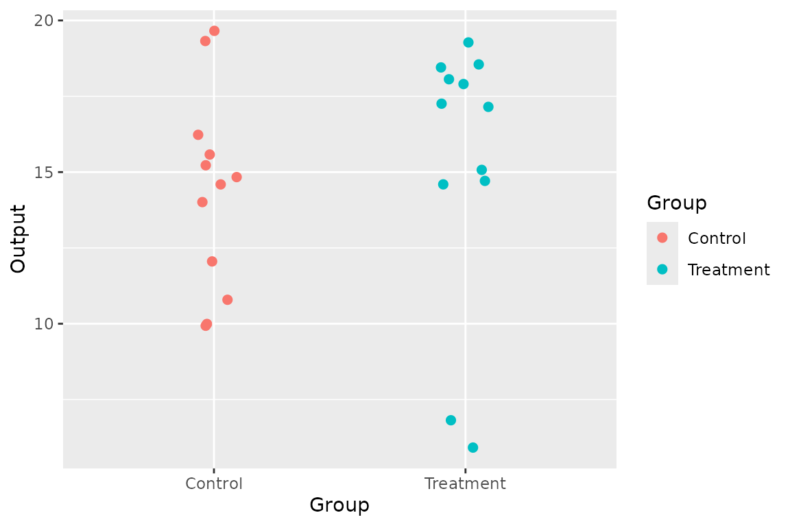
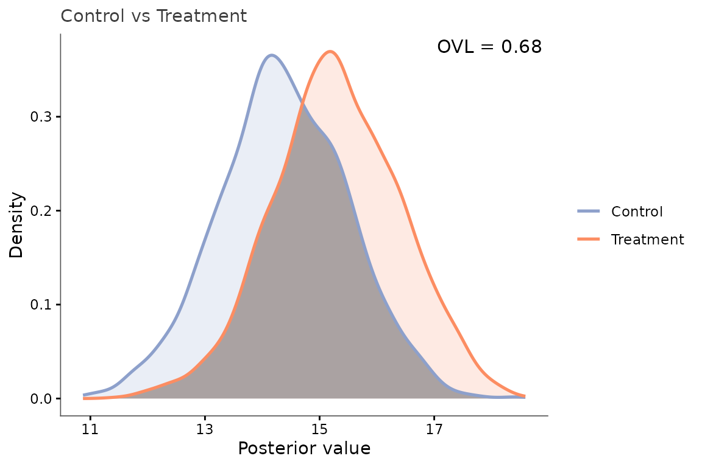

02 · Univariate mode: comparing two groups with no feature axis
Source:vignettes/02_univariate.Rmd
02_univariate.RmdYou have two groups of replicate measurements on a single quantity –
no feature/covariate axis at all (e.g. one protein’s abundance, or a
single summary score). There is nothing for a kernel to correlate
against, so supplying neither ID nor Input
switches posterior_mean() into univariate mode: each group
is treated as one feature.
Data
set.seed(1)
data <- simu_db(univariate = TRUE, nb_group = 2, nb_sample = 12,
diff_group = 1.5, var_sample = 4)
data$Group <- factor(data$Group, levels = c(1, 2), labels = c("Control", "Treatment"))
head(data)
#> Group Sample Output
#> 1 Control 1 14.010006
#> 2 Control 2 9.932919
#> 3 Control 3 19.656556
#> 4 Control 4 14.593464
#> 5 Control 5 9.993560
#> 6 Control 6 15.225149
ggplot(data, aes(Group, Output, color = Group)) +
geom_jitter(width = 0.1, size = 2)
Fit and compare
No kern is supplied either: with a single feature per
group, posterior_mean() fits a closed-form
residual-variance kernel itself.
posterior <- posterior_mean(data, mu_0 = mean(data$Output), lambda_0 = 1)
#> Warning in inject_univariate_dummy_cols(data, "posterior_mean"):
#> posterior_mean(): no 'ID'/'Input' columns found in 'data' -- running in
#> univariate mode (each group treated as a single feature, no cross-feature
#> correlation structure).
group_diff(posterior)
#> Metric: ovl_metric(n_mc = 2000)
#>
#> Control Treatment
#> Control 1.0000000 0.6814076
#> Treatment 0.6814076 1.0000000The warning above (“running in univariate mode…”) is expected – it confirms the mode switch rather than signalling a mistake.
Visualize the difference
With a single feature per group,
plot_posterior_overlap() shows exactly what the OVL number
summarizes: both groups’ posterior densities, with the region of overlap
shaded:
samples <- sample_posterior(posterior, n = 2000)
plot_posterior_overlap(samples, group1 = "Control", group2 = "Treatment",
id = unique(samples$ID)[1])
Takeaways
- Univariate mode needs both
IDandInputabsent, not just one of them. - Everything downstream (
group_diff(), the metric family, the plots) works unchanged – a single feature is just a group withnb_id = 1.
Related
Basic pipeline (the general multi-feature case) – Pooled vs. non-pooled fitting.